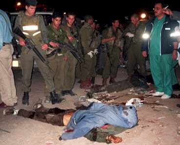

JERUSALEM: Masked gunmen dashed into Gaza City's seaside Beach Hotel in broad daylight Wednesday and executed the chief of the Palestinian television network, a well-connected but unpopular official close to Palestinian Authority President Yasser Arafat. Israel immediately denied any link to the gangland-style hit. Whoever the assassins turn out to be, the killing of someone so close to Arafat sent a chilling message throughout Palestinian society and reinforced a profound sense of insecurity and fear. Palestinian police said Hisham Miki, executive director of the Palestinian Broadcasting Corp., fell dead in the hotel's restaurant after two gunmen pumped repeated rounds into his chest and head before escaping in a waiting car. The slaying came amid a spate of Israeli assassinations of Palestinian militants and Palestinian killings of accused collaborators, all part of the brutal conflict that has roiled this region for the last 3 1/2 months and destroyed once-promising prospects for a definitive peace. While some Palestinian officials publicly suggested an Israeli role in Miki's death, Palestinian security officers were instead focusing their investigation on corruption allegations involving Miki's lucrative business dealings. He may have been the victim of a political or personal vendetta, several Palestinian sources said.
The violence came as Indian security forces tightened security and intensified searches in the region ahead of India's January 26 Republic Day celebrations when militants have threatened to strike. Officials said an unidentified militant was killed on Thursday in a gun battle with Indian police in the Bemina area of Srinagar, the summer capital of Jammu and Kashmir.
And look at what the U.S. has to say on the violence:-
WASHINGTON, Jan 25: Welcoming the second Indian extension of the Kashmir ceasefire, the United States on Wednesday said it believed the peace process would be greatly enhanced if the Kashmiri freedom fighters groups responded positively to India's announcement by taking steps to halt violence.Replying to questions at his daily press briefing, State Department spokesman Richard Boucher also said the government of Pakistan should use its influence with Kashmiri groups to urge them to end violence in the territory.
Asked whether the ceasefire extensions were leading anywhere, Mr. Boucher said: "Certainly, we think it is a good thing. This followed on earlier steps, positive steps, that we have seen from both India and Pakistan. We believe the peace process would be greatly enhanced if the Kashmiri groups responded positively to India's announcement by taking steps to halt the violence. We would encourage all the parties to take initiatives to reduce violence and foster a process to end the conflict in Kashmir.
Shoutz to All WFD members:
|^CyBeRpUnK^|, nightman, m0r0n, sub-0, laughing3y3s, h3ll rais3r, B1n4ry C0d3, Tå|{ê Ñø £Øgîç, brake^off, Syr0kill and me.
Extra Shoutz to:
Ador, Mers, Claser, Barko, BlowBack, ¤§LÄÐèK»»¤, ShC0d3, ninoide, Alhdeath, Dftkey, nin0, Incubus, Sentinel, dec0d3r, Neon Lenz, B0OB, Misoskian, Tahum, kr4kr0k, Anti Security Hackers, Sound, Rekado,*kArLa*, Bigbyte, Penny, JJmonte, Shaitana, Telnet2, RSH, ER, 8PK, NCA, CT, AC and all u guys of suporting us
... Yeah, I really love you... you know who r me, and i know who r u...
"Tessa, I love you - Incubus"
"Little_vampire, just wanted you to know you're special - Sentinel"
Admin
Sorry about this, thankz for the free hosting, thankz for all u guyz outhere
of suporting us.
If u wanna help us, please contact us.

kamaleon_korn@hushmail.com